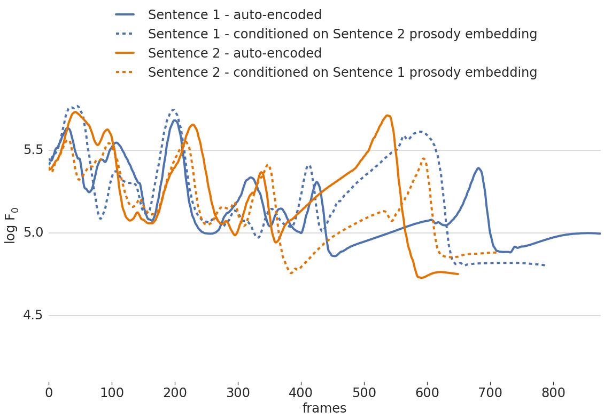
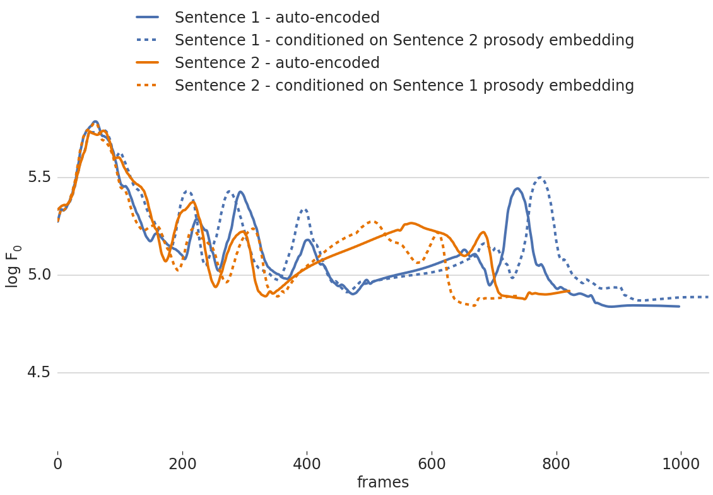
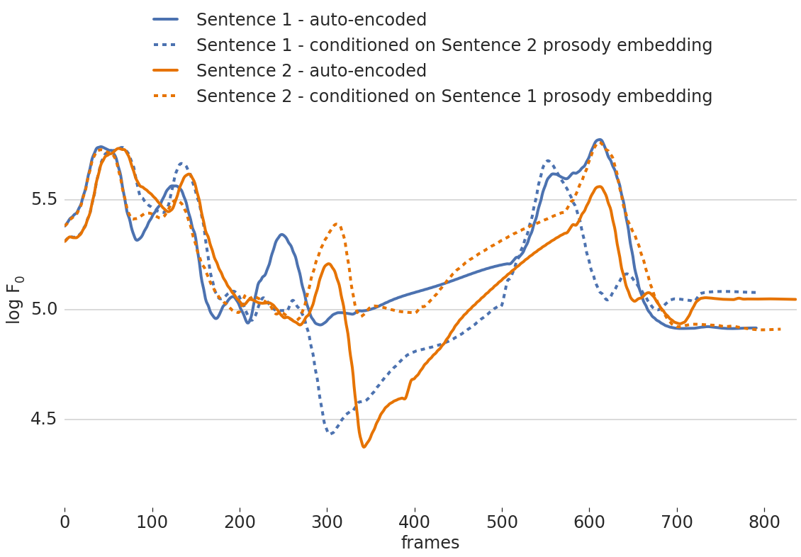
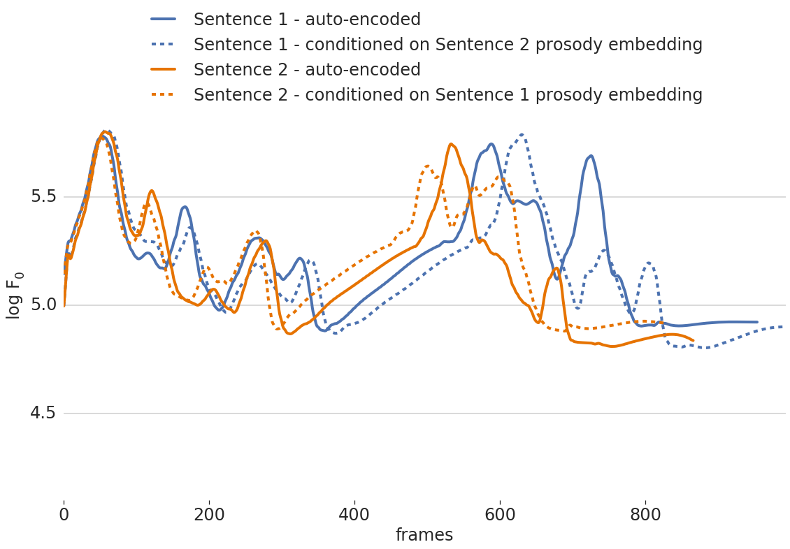

CHiVE: Examples of prosody transfer
Example 1
| Sentence 1 — recording | Sentence 1 — auto-encoded | Sentence 1 — conditioned on Sentence 2 embedding |
|---|---|---|
| Sentence 1: "What do you call a boomerang that doesn't come back? A stick!" | ||
| Sentence 2 — recording | Sentence 2 — auto-encoded | Sentence 2 — conditioned on Sentence 1 embedding |
|---|---|---|
| Sentence 2: "What's orange and sounds like a parrot? A carrot." |
The clearest example of prosody being transferred is at the end of the orange dashed line, where it closely mimics the blue solid line.

This is Figure 5 in the paper.
Example 2
| Sentence 1 — recording | Sentence 1 — auto-encoded | Sentence 1 — conditioned on Sentence 2 embedding |
|---|---|---|
| Sentence 1: "What do you get when you put a vest on an alligator? An investigator." | ||
| Sentence 2 — recording | Sentence 2 — auto-encoded | Sentence 2 — conditioned on Sentence 1 embedding |
|---|---|---|
| Sentence 2: "What do you get from a pampered cow? Spoiled milk." | ||
The clearest effect of prosody transfer is visible at the start, where the dashed lines overlap nearly perfectly with the solid lines of the opposing color.
As noted in the paper, the effects wears off as the sentence progresses. Near the end, the two blue line ends up much like each other, without, apparently, following the guidance of the reference prosody embedding. Something similar happens to the orange curves.

As noted in the paper, the effects wears off as the sentence progresses. Near the end, the two blue line ends up much like each other, without, apparently, following the guidance of the reference prosody embedding. Something similar happens to the orange curves.
This is Figure 6 in the paper.
Example 3
| Sentence 1 — recording | Sentence 1 — auto-encoded | Sentence 1 — conditioned on Sentence 2 embedding |
|---|---|---|
| Sentence 1: "How did the frog burn its tongue? It tried to eat a firefly." | ||
| Sentence 2 — recording | Sentence 2 — auto-encoded | Sentence 2 — conditioned on Sentence 1 embedding |
|---|---|---|
| Sentence 2: "How did the hipster burn his mouth? He sipped his coffee before it was cool." | ||
The dashed lines, again, follow the solid lines of opposing color quite perfectly at the start.
Additionally, between frame 300 and 500, there is a clear transfer effect visible, where the dashed lines deviate substantially from their solid counterparts of the same color, and follow the solid lines of the oppsoing color instead.
The dashed orange line drastically differs from the solid orange line at the end. It seems to be guided by the solid blue line in stead, albeit somehwat delayed, due to differences in timing.

This is an additional example, not included in the paper.
Example 4
| Sentence 1 — recording | Sentence 1 — auto-encoded | Sentence 1 — conditioned on Sentence 2 embedding |
|---|---|---|
| Sentence 1: "What do cats eat for breakfast? Mice Crispies." | ||
| Sentence 2 — recording | Sentence 2 — auto-encoded | Sentence 2 — conditioned on Sentence 1 embedding |
|---|---|---|
| Sentence 2: "What do clouds wear under their shorts? Thunderpants." | ||
The dip in F0 of the blue dashed line (around frame 300) clearly follows the one of the orange solid line (around frame 350).
Same with the peak of the orange dashed line around frame 600, which coincides which is raised, relative to the peak in the solid orange line, to coincide with the one in the the blue solid line.

Same with the peak of the orange dashed line around frame 600, which coincides which is raised, relative to the peak in the solid orange line, to coincide with the one in the the blue solid line.
This is an additional example, not included in the paper.
Example 5
| Sentence 1 — recording | Sentence 1 — auto-encoded | Sentence 1 — conditioned on Sentence 2 embedding |
|---|---|---|
| Sentence 1: "Why are archaeologists so annoyed? They always have a bone to pick." | ||
| Sentence 2 — recording | Sentence 2 — auto-encoded | Sentence 2 — conditioned on Sentence 1 embedding |
|---|---|---|
| Sentence 2: "Why are libraries so strict? They have to go by the book." | ||
This is a negative example, where the dashed curves look a lot like their solid counterparts, and do not seem to be guided much by the reference prosody (the solid lines in the opposing color).

This is an additional example, not included in the paper.
These audio samples go with CHiVE: Varying Prosody in Speech Synthesis with a Linguistically Driven Dynamic Hierarchical Conditional Variational Network, Wan, V., Chan, C.-a., Kenter, T., Vit, J., and Clark, R. A., Proceedings of the Thirty-sixth International Conference on Machine Learning (ICML 2019), 2019, Section 4.3, Figures 5 and 6, plus some additional examples.
The underlying scenario for these examples would be that the text and nothing else is provided for a sentence, and the speech audio for this sentence should be synthesized, not with a default prosody, but with a prosody that is like a reference sentence, for which we do have a recording.
If the dashed lines of one color follows the solid line of the other color, this is taken to be a sign that prosody transfer happened (i.e., if the dashed blue line seems to follow the solid orange line, or vice versa).
If no transfer would take place, lines with the same color would match (i.e., dashed blue lines would match solid blue lines).